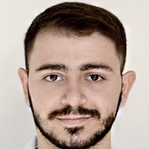

Facharzt für Allgemeinchirurgie
Normed MC
03/2026 – heute

Praktizierender Facharzt für Allgemeinchirurgie, derzeit tätig bei Normed MC und Medline Clinic, mit Erfahrung in Notfallmedizin, Anästhesiologie und Militärmedizin.
War während des 44-Tage-Kriegs als Militärarzt im Verteidigungsministerium der Republik Armenien im Einsatz (09/2020 – 07/2021).